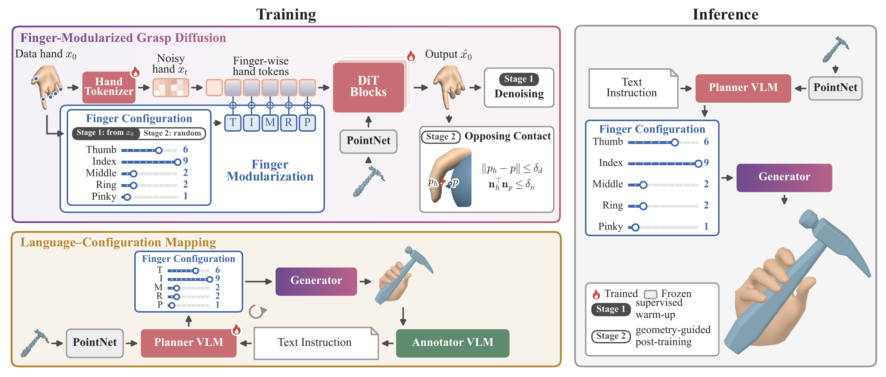

Fine Grained
Grasp Generation
- Text
- Finger configuration
- Grasp
Instructions
Claw hammer
Finger configuration0 bent → 9 straight
| Index | Middle | Ring | Pinky | Thumb |
|---|
Display surfaces are smoothed; measurements use the original mesh.
 Claw hammer · A
Claw hammer · A
Dataset
Object point cloud

Language descriptions
DetailedConversationalBrief
Finger-control labels
- Index
- Bent
- Middle
- Partly bent
- Ring
- Mostly straight
- Pinky
- Mostly straight
- Thumb MCP
- Partly bent
Hand pose

Reference descriptions
Objects
Video
Method
A language planner maps text to finger configurations. The diffusion model generates grasps from these controls and the object point cloud.
